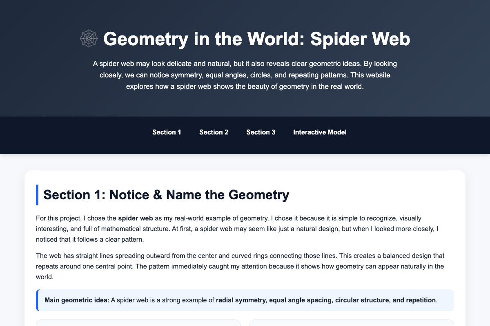

PROJECT NOTES / GEOMETRY
Patterns you can explore.
A coursework page connecting spider webs with geometry and an adjustable visual model.

The problem
Explain geometry using the visible structure of a spider web, then connect that explanation to a visual model.
The approach
The existing page moves from observations to radial symmetry, angles, circles, and repetition. An SVG model offers controls for changing the web.
The challenge
Connect mathematical language with something visitors can see and manipulate. The written explanation provides context for the model.
The outcome
The project includes illustrated explanations and an adjustable spider-web model, available directly from the portfolio.
Scope & next steps
This remains an educational coursework demonstration. The model simplifies a natural structure rather than simulating biological web construction.